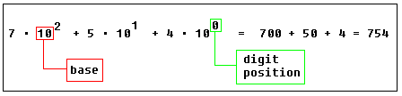
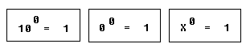
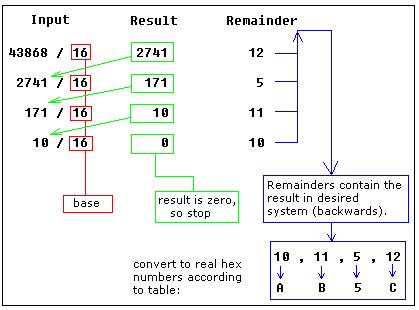

什么是进制？
对于同一个数字有很多表示方式。很久很久以前人们用棍子
计数，后来学会在地上画棍子，最终画在纸上．比如：
｜｜｜｜｜（５根棍子）
罗马人使用不同的符号表示棍子数目：｜｜｜仍然表示３根
棍子，而用V表示５根棍子用X表示１０根～
在当时，使用棍子计数是伟大的发明．用符号代替棍子更是
如此．如今采用十进制系统表示数字是最好的方法之一．之所以
这样说是因为它实现了用符号表示＂没有＂这一重要思想（３个XX?）
１５００年前的印度，零（０）第一次被看作一个数字．
稍后，这一概念在中东阿拉伯地区使用，最终传播到西方拉美国家。
在下面的学习中，你会逐渐认识到这个思想对于现代数字系统是多么
重要。
十进制系统
目前使用最多的是十进制．十进制系统有１０个数字
０，１，２，３，４，５，６，７，８，９
利用这些数字能表示任何数值，例如
７５４
这些数字是由每一位数字乘以“基数”的幂累加而成的
（上一个例子中基数是10 因为十进制中有十个数字）。

位置对于每一个数字是很重要的。例如，你将上一个例子
中的“7”放到结尾：547
数值就成为：

特别提醒：任何数字的0次幂都是1，0的0次幂也是1

二进制
计算机没有人类聪明（至少现在是这样），制造一个只有
开关或者称为 0，1 两种状态的电子机器很容易。计算机
使用二进制系统，只有两个数字
0, 1
基地为2
每一位二进制数称作一位（BIT），4 BIT 组成一个半字节（NIBBLE），
8BIT组成一个字节（BYTE），两个字节组成一个字（WORD），两个字
组成一个双字（DOUBLE WORD）（很少使用）：
习惯上在一串二进制后面加上“b”，这样，我们可以知道101b是二进制
表示十进制的5。
二进制10100101b表示十进制的165，计算方法如下：

十六进制系统
十六进制系统使用16个数字
0, 1, 2, 3, 4, 5, 6, 7, 8, 9, A, B, C, D, E, F
基底是 16.
十六进制非常紧凑，便于阅读。将二进制转换为十六进制
很容易，半字节（4bits） 对应一位十六进制如下表
|

|
习惯上我们在一个十六进制数的后面加上 "h"，以便和其他进制区别, 这样我们就知道 5Fh是一个十六进制数表示十进制的 95。习惯上，我们也在以字母开头（从Ａ到Ｆ）的十六进制数前面
加上"0" 例如：
0E120h.
十六进制 1234h 等于 4660:
十进制到另外进制的换算
在换算中，将十进制数不断除以目标进制的基底，每一次都要记录下商和余数，直到商０。
余数用来表示结果。
下面是一个十进制３９（基底是１０）到十六进制（基底是１６）的换算：

结果为 27h.
上例中所有的余数都小于１０，不必使用字母。
再举一个更复杂的例子：
十进制 43868 换算为十六进制：

结果是 0AB5Ch, 使用 上面提到的表 将大于９的数字替换成字母。
运用同样的原理，我们可以换算为二进制（用２作除数），或者是先换算成十六进制，再用
上面的表 换算成二进制：

于是，得到二进制： 1010101101011100b
有符号数
对于十六进制数 0FFh 无法确定它是正数还是负数，因为它可以表示十进制的"255"
或者 "- 1"。
８位可以表示２５６个状态，于是，我们可以假定前１２８个表示正数(从0到127)，接
下来的１２８个数(从128到256)表示负数
。
如果想表示"- 5"，我们从２５６中减去５，即
用这种复杂的方法表示一个负数有着数学依据的，数学上"- 5" 加上 "5"等于０。
当我们将两个８位的数字 5 和 251相加时，结果超过２５５，溢出处理为０！
128到256高位始终是１，这个可以作为数字符号的标记
对于字（１６位），１６位有65536个状态，头３２７６８个状态(从0到32767)用来
表示正数，下面的３２７６８个状态(从32767到65535) 表示负数。
Emu8086 带有数制转换工具，也可以计算各种数值表达式。选择菜单 Math 项:

Number Convertor （数制转换）可以实现任意数制之间的转换。在文本框中填写源
数值，将自动转换到任意的数制。 可以作 8 位 或者 16 位转换。
Expression Evaluator（表达式计算）可以用来计算不同数制的计算以及从一个进制
到另一个进制的转换。输入表达式，按下回车，结果就会以你选定的进制表示。最长可以
进行３２位的计算。当在Signed打钩选中时（除了八进制和双字），最前面的一位将被认
作是符号位。这样以来，0FFFFFFFFh 将被认为是十进制的 －１。
例如，你计算
Signed 和 Word 选项，结果是 -17 （因为表达式被认为是
想按照无符号数计算，请不要选择 Signed 表达式为
1114095
同样你可以使用Number Convertor将非十进制换算为有符号的十进制，然后根据十进制
计算。
支持如下运算:
~ not (inverts all bits). * multiply. / divide. % modulus. + sum. - subtract (and unary -). << shift left. >> shift right. & bitwise AND. ^ bitwise XOR. | bitwise OR.二进制必须有“ｂ”作结尾，例如
00011011b
十六进制必须有"h"作结尾，另外，当地一位是字母时，最前面必须加上０，例如：
0ABCDh
八进制必须有"o"作结尾，例如：
77o